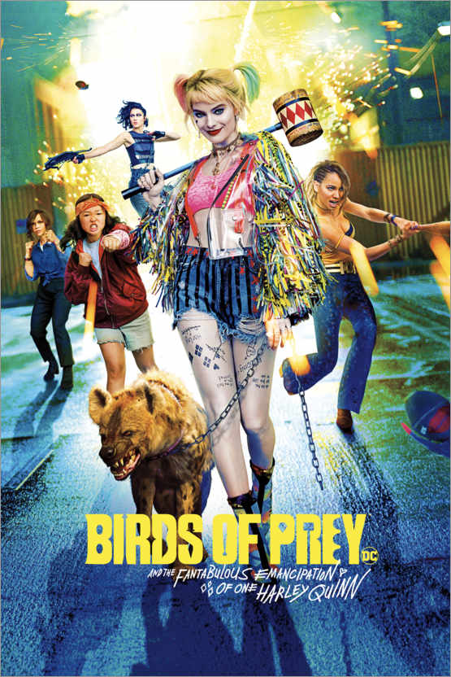
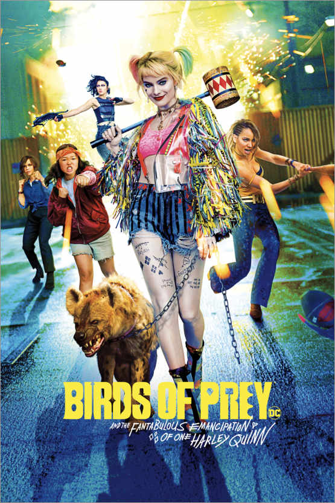
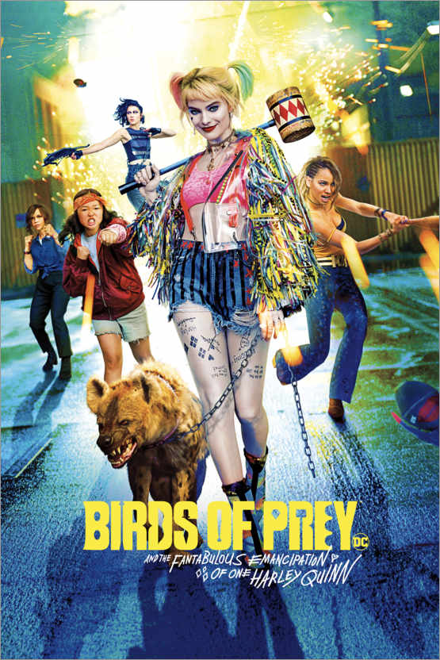

Movies

 


Margot Robbie or Margot Elise Robbie is an Australian who is a popular film and television actress and producer by profession. She was born on 02 July 1990 in a well-settled Christian family from Dalby, Queensland, Australia. She is popularly known for portraying the famous role of Jane Porter in the popular animated film titled The Legend of Tarzan in the year 2016. She is also popularly known for playing the lead role of Harley Quinn in the DC Extended Universe franchise’s movies like Suicide Squad and Birds of Prey. She has portrayed some other famous roles in several popular movies and television series in the entertainment industry.
Is this one person!?
One of Margot Robbie’s lesser-known passions is ice hockey, which she first gained interest in after seeing Disney’s The Mighty Ducks and later joined an amateur league after moving to the States. Despite her skating experience from playing the sport, when she was cast as Olympic figure skater Tonya Harding for the Oscar-winning 2017 film I, Tonya, Robbie still required training from renowned figure skating choreographer Sarah Kawahara.
Speaking of nerve-racking moments in cinema, Batman’s (Ben Affleck) underwater capture of Harley Quinn (Margot Robbie) in Suicide Squad seems like a stunt too risky for a movie star (unless you are Tom Cruise, perhaps). However, during a 2016 appearance on The Tonight Show, Robbie assured host Jimmy Fallon that she really performed the death-defying feat on camera by training to hold her breath for a personal record of five minutes, adding that the final cut of the film only a small snippet of how much time she really spent submerged for the scene.
In addition to her aforementioned mastery of underwater acting, Margot Robbie brought another hidden talent of hers to the set of Suicide Squad, but there was nothing professional about it this time. The actress told Jimmy Fallon that she began dabbling in amateur tattoo artistry using friends and herself as practice after purchasing a “tattoo gun” on eBay and, despite her lack of any formal training, many actors and crew members from the 2016 supervillain film, including director David Ayer, allowed her to ink them. After a few mishaps, however, she revealed in 2020 that she has retired that hobby.
